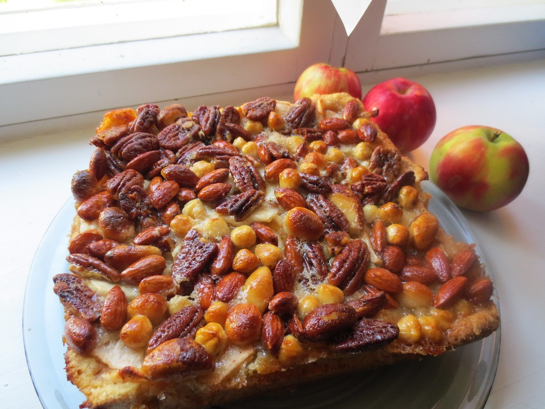

Juhlavat Kakut

Gluteiiniton Mansikkakakku
Pohja: 5 kananmunaa, 1,8 dl sokeria, 1,5 dl Sunnuntai gluteiiniton –jauhoseosta, 1 dl perunajauhoja, 1 tl leivinjauhetta
Vatkaa kananmunat ja sokeri, siivilöi jauhot ja leivinjauhe ja sekoita. Paista 175 C keskitasolla n. 23 min. Anna jäähtyä, leikkaa kolmeen osaan ja täytä.
Täyte: mansikkaviipaleita / -lohkoja, sokeria, 3,3 dl kuohukermaa vatkattuna, 275g turkkilaista jugurttia, vaniljasokeria, 1 dl sokeria, ½ ps Marianne Crush
Pinta: Koristele mansikoilla ja kermavaahdolla.
Pohja: 5 kananmunaa, 1,8 dl sokeria, 1,5 dl Sunnuntai gluteiiniton –jauhoseosta, 1 dl perunajauhoja, 1 tl leivinjauhetta
Vatkaa kananmunat ja sokeri, siivilöi jauhot ja leivinjauhe ja sekoita. Paista 175 C keskitasolla n. 23 min. Anna jäähtyä, leikkaa kolmeen osaan ja täytä.
Täyte: mansikkaviipaleita / -lohkoja, sokeria, 3,3 dl kuohukermaa vatkattuna, 275g turkkilaista jugurttia, vaniljasokeria, 1 dl sokeria, ½ ps Marianne Crush
Pinta: Koristele mansikoilla ja kermavaahdolla.

Omena-pähkinäkakku
Pohja: 150g voita, 2 dl fariinisokeria, 2 munaa, 4 dl vehnäjauhoja, 2 tl leivinjauhetta, 2 tl vaniljasokeria, 2 omenaa, 1 dl kermaa
Kuori omenat ja pilko ne n. 5-7mm kuutioiksi. Sulata voi ja sekoita siihen fariinisokeri ja munat yksitellen vatkaten. Sekoita kuivat aineet keskenään. Sekoita sitten jauhoseos rasva-sokeri-muna -seokseen. Sekoita joukkoon kerma ja omenakuutiot. Voitele ja korppujauhota irtopohjavuoka ja kaada taikina sinne. Paista 175 C n. 30 min.
Kuorrutus: 125 g voita, 2 ½ dl fariinisokeria, 1 ½ dl kuohukermaa, 7 dl pähkinäsekoitusta
Sillä aikaa kun kakku on uunissa, mittaa kuorrutteen voi, fariinisokeri ja kuohukerma kattilaan, sulata ja keitä kunnes seos on sakeampaa (n. 12 min.). Kaada seos pähkinöiden joukkoon. Kun kakku on ollut 30 minuuttia uunissa, ota se pois ja levitä pähkinätäyte sen päälle. Laita kakku takaisin uuniin ja anna olla vielä n. 12 min.
Pohja: 150g voita, 2 dl fariinisokeria, 2 munaa, 4 dl vehnäjauhoja, 2 tl leivinjauhetta, 2 tl vaniljasokeria, 2 omenaa, 1 dl kermaa
Kuori omenat ja pilko ne n. 5-7mm kuutioiksi. Sulata voi ja sekoita siihen fariinisokeri ja munat yksitellen vatkaten. Sekoita kuivat aineet keskenään. Sekoita sitten jauhoseos rasva-sokeri-muna -seokseen. Sekoita joukkoon kerma ja omenakuutiot. Voitele ja korppujauhota irtopohjavuoka ja kaada taikina sinne. Paista 175 C n. 30 min.
Kuorrutus: 125 g voita, 2 ½ dl fariinisokeria, 1 ½ dl kuohukermaa, 7 dl pähkinäsekoitusta
Sillä aikaa kun kakku on uunissa, mittaa kuorrutteen voi, fariinisokeri ja kuohukerma kattilaan, sulata ja keitä kunnes seos on sakeampaa (n. 12 min.). Kaada seos pähkinöiden joukkoon. Kun kakku on ollut 30 minuuttia uunissa, ota se pois ja levitä pähkinätäyte sen päälle. Laita kakku takaisin uuniin ja anna olla vielä n. 12 min.
Pääsiäiskakku
Pohja: 150g pääsiäismunasuklaata, 150g margariinia tai voita, 4 kananmunaa, 2 dl sokeria, 2 ½ dl vehnäjauhoja, 2 rkl kaakaojauhetta, 1 ½ tl leivinjauhetta
Kostutus: 1 ½ dl vahvaa kahvia, ½ dl konjakkia
Täyte 1: 1 prk piltti tyrnisosetta 1 prk persikoita valutettuna 1 sitruunan mehu ½ dl hillosokeria Kiehauta nämä hilloksi. Täyte 2: 2 ½ dl flora vispiä, 150g maitosuklaapralineja
Sulata maitosuklaapralinet, jäähdytä hetki, lisää flora vispi ja vispaa vaahdoksi. Säästä 1/3 suklaakermasta kakun pintaa varten.
Pinta: 1/3 suklaakermaa, 13% maustamaton tuorejuusto 1 mignon suklaamuna
Sulata mignon suklaamuna. Ota loput suklaakermasta, lisää tuorejuusto ja sulatettu mignon. Levitä kakun päälle. Koristele halutessasi ripottelemalla tomusokeria kakkupaperin läpi sekä marmeladikarkeilla.
Pohja: 150g pääsiäismunasuklaata, 150g margariinia tai voita, 4 kananmunaa, 2 dl sokeria, 2 ½ dl vehnäjauhoja, 2 rkl kaakaojauhetta, 1 ½ tl leivinjauhetta
Kostutus: 1 ½ dl vahvaa kahvia, ½ dl konjakkia
Täyte 1: 1 prk piltti tyrnisosetta 1 prk persikoita valutettuna 1 sitruunan mehu ½ dl hillosokeria Kiehauta nämä hilloksi. Täyte 2: 2 ½ dl flora vispiä, 150g maitosuklaapralineja
Sulata maitosuklaapralinet, jäähdytä hetki, lisää flora vispi ja vispaa vaahdoksi. Säästä 1/3 suklaakermasta kakun pintaa varten.
Pinta: 1/3 suklaakermaa, 13% maustamaton tuorejuusto 1 mignon suklaamuna
Sulata mignon suklaamuna. Ota loput suklaakermasta, lisää tuorejuusto ja sulatettu mignon. Levitä kakun päälle. Koristele halutessasi ripottelemalla tomusokeria kakkupaperin läpi sekä marmeladikarkeilla.
Suklaa-aprikoosikakku
Pohja: 4 kananmunaa, 2 dl sokeria, 200g tummaa suklaata, 2 ½ dl vehnäjauhoja, 2 rkl kaakaojauhetta, 1 tl leivinjauhetta, 175g voita
Sekoita vehnäjauhot, kaakaojauhe ja leivinjauhe keskenään. Vatkaa erillisessä astiassa kananmunat ja sokeri vaahdoksi. Sulata suklaa ja lisää se kananmuna-sokeri seokseen. Lisää kuivat aineet. Sulata voi ja lisää, sekoita taikinaksi. Paista 175 C n. 30-35min.
Aprikoositäyte: 1 tlk (420g / 240g) säilöttyjä aprikooseja liemineen, 1 dl vettä, 2 dl hillosokeria, 1 rkl vaniljasokeria
Kaada aprikoosit liemineen ja vesi kattilaan ja hauduta n. 1 tunti. Lisää hillosokeri ja vaniljasokeri ja keitä n. 10min.
Kuorrutus: 350g tummaa suklaata, ½ dl vettä, 1 dl kuohukermaa, ¾ dl sokeria
Paloittele suklaa kuumuutta kestävään kulhoon. Kiehauta vesi, kuohukerma ja sokeri. Kaada suklaan päälle ja sekoita.
Pohja: 4 kananmunaa, 2 dl sokeria, 200g tummaa suklaata, 2 ½ dl vehnäjauhoja, 2 rkl kaakaojauhetta, 1 tl leivinjauhetta, 175g voita
Sekoita vehnäjauhot, kaakaojauhe ja leivinjauhe keskenään. Vatkaa erillisessä astiassa kananmunat ja sokeri vaahdoksi. Sulata suklaa ja lisää se kananmuna-sokeri seokseen. Lisää kuivat aineet. Sulata voi ja lisää, sekoita taikinaksi. Paista 175 C n. 30-35min.
Aprikoositäyte: 1 tlk (420g / 240g) säilöttyjä aprikooseja liemineen, 1 dl vettä, 2 dl hillosokeria, 1 rkl vaniljasokeria
Kaada aprikoosit liemineen ja vesi kattilaan ja hauduta n. 1 tunti. Lisää hillosokeri ja vaniljasokeri ja keitä n. 10min.
Kuorrutus: 350g tummaa suklaata, ½ dl vettä, 1 dl kuohukermaa, ¾ dl sokeria
Paloittele suklaa kuumuutta kestävään kulhoon. Kiehauta vesi, kuohukerma ja sokeri. Kaada suklaan päälle ja sekoita.